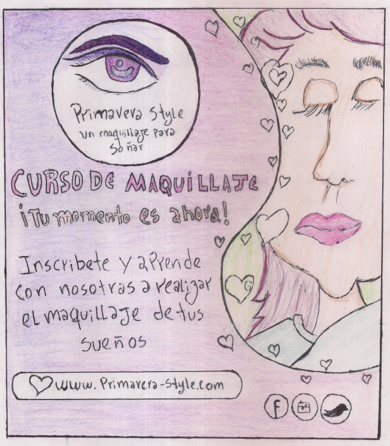
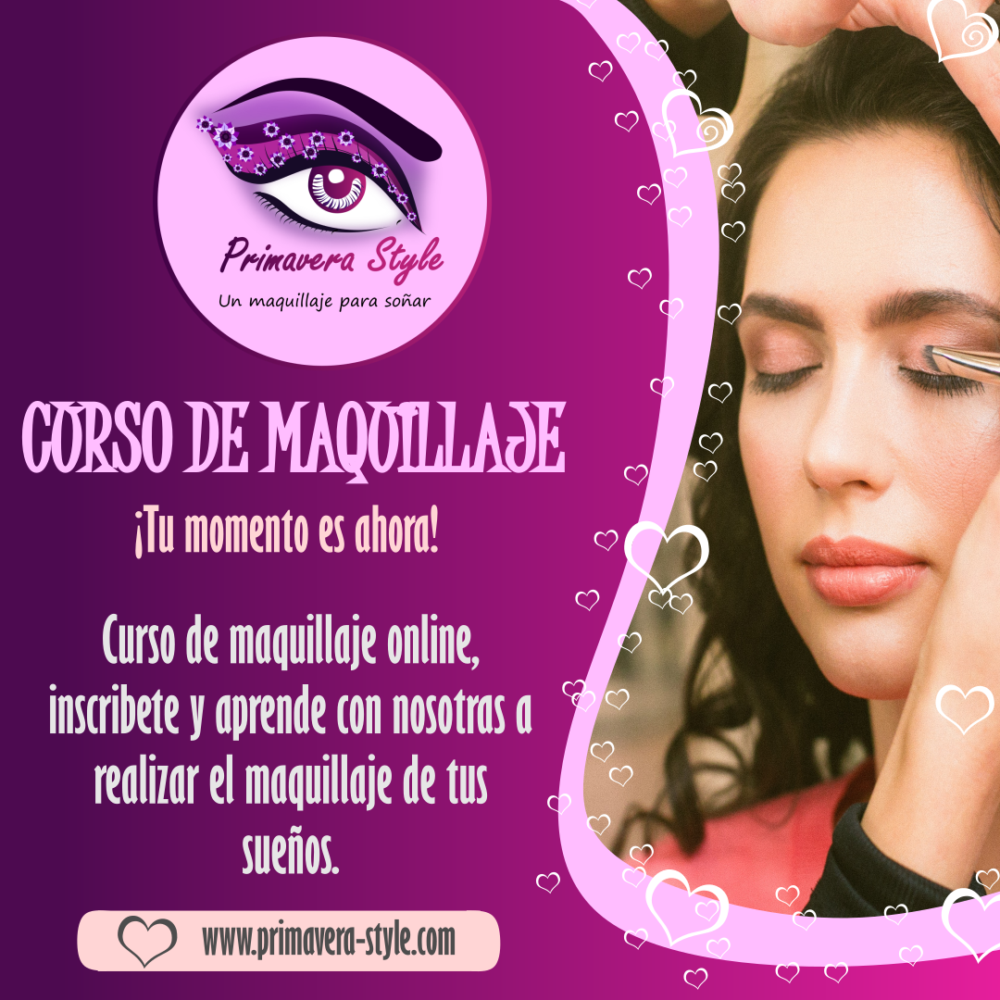

Primavera Style
Defensa Virtual mediante un Vídeo.Proyecto
Un curso de maquillaje online es un micro emprendimiento digital de tipo infoproducto orientado a la estética femenina.
Objetivos
Objetivo General
Crear un curso de maquillaje online.
Objetivos Específicos
- Planificar el guion del contenido de los videos de curso de maquillaje online.
- Grabar los vídeos del curso de maquillaje online.
- Publicar el curso con sus videos en la página web.
- Revisar inscripciones de las participantes.
Justificación
Con la creación de un curso de maquillaje online muchas más jóvenes y adultas tendrán acceso al aprendizaje de las técnicas y tips prácticos del maquillaje. Tiene como finalidad aportar a los participantes los conocimientos que le permitan cultivar el cuidado de su estética personal. Fortaleciendo además el autoconcepto que puedan tener las participantes acerca de si mismas y de su belleza. Aunque el maquillaje puede servir para corregir algunas imperfecciones fáciles, lo más importante es que primero se acepten ellas como son, viendo el maquillaje solo como una forma de realzar sus rasgos y la belleza que tiene desde su nacimiento.
El curso tiene la fuerte premisa de “Maquillajes para Soñar”, busca desde un enfoque práctico mostrar las técnicas y los estilos que puedan ser más efectivos para cada participante, permitiéndoles explorar y descubrir los maquillajes de sus sueños, bonitos, elegantes y originales.
A través de este micro emprendimiento son muchas las participantes que pueden ser beneficiadas con la formación en maquillaje, las cuales por un costo económico de forma online desde la seguridad de sus hogares y en todo momento podrán acceder al contenido del curso.
Ventajas
- Al ser un micro emprendimiento digital, y más en este caso al ser un infoproducto estará disponible en Internet, permitiendo el acceso al mismo 24/7.
- Se reduce el costo de inversión en alquiler de locales, y otros recursos que los emprendimientos tradicionales conllevan.
- Está enfocado en una necesidad común de todas las mujeres por lo que se amplia la posibilidad de muchas más clientas potenciales.
- Al ser un producto totalmente digital no requiere él envió de paquetes que pueden llegar a ser inseguros y costosos.
- Puede llegar a ser un emprendimiento escalable que mientras más cursos suba más participantes pueden inscribirse lo que se traduce en mayores ingresos.
Desventajas
- Requiere un mayor trabajo de promoción debido que a lo amplio del Internet y lo competitivo de los emprendimientos digitales.
- Amerita una preparación técnica en las nuevas tecnologías de información y comunicación.
- Requiere conocimientos de fotografía, grabación y programas de edición de imágenes y videos.

